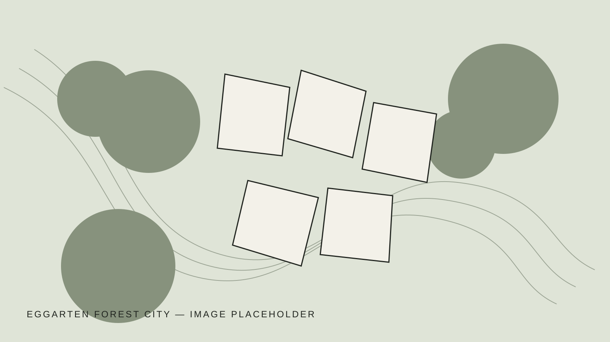

Project 02 / Urban Design StudioEggarten
Eggarten
Forest City
A forest-based residential landscape that treats existing vegetation, succession and shared open space as the primary framework for urban development.
- Location
- Munich, Germany
- Year
- 2025
- Type
- Urban Design Studio
- Focus
- Forest urbanism
- Role
- Design · Visualization

Landscape before buildings.
The project begins with the ecological structure of the site rather than a fixed architectural object. Existing trees, forest edges and open clearings establish a resilient spatial framework for new forms of collective living.
Replace the placeholder diagrams with the final plans, sections, renderings and process material from the portfolio.